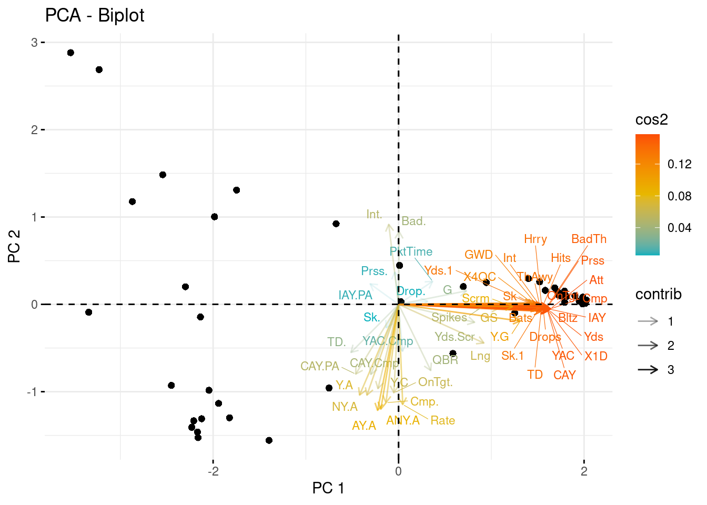

Code
library(ggplot2)
library(corrr)
library(ggcorrplot)
library(FactoMineR)
library(factoextra)library(ggplot2)
library(corrr)
library(ggcorrplot)
library(FactoMineR)
library(factoextra)Principal Component Analysis (PCA) is a widely used statistical method for reducing the dimensionality of multivariate data. The goal of PCA is to transform the original variables into a new set of uncorrelated variables called principal components. This literature review will explore the methods and applications of PCA used in previously published data analysis. While we will review the use of PCA in several analytical fields, our use of PCA focuses on National Football League data. In the simplest terms, PCA acts to rotate the axis of different variables to better understand the variance in the data. Only the variables with the most important relationships are kept as they explain the most variance in the dataset. In this way, PCA is used to decrease the dimensionality of a dataset. The first Principal component is calculated by adding the variables once they have been multiplied by a weighted value. The next Principal component is calculated using another variable as long as that variable is uncorrelated to the first. This continues until the number of Principal Components equals the number of variables, or until you have reached a determined cutoff point (Holland 2008). The four options provided by Holland to be used as a cutoff point are if the increase of variance explained from one variable to the next is minimal. The second is to set a limit for variance explained, possibly 90%, and ignore all PCs after this limit is reached. The third is to use a correlation matrix and eliminate all where the variance is less than 1. Finally, the fourth, is to ignore the last PCs in the list if their variance explained is equal. In all cases the variable data needs to be normally distributed for PCA to work correctly.
PCA is a powerful tool that can be applied to seemingly any field where analysis is used on 4 or more vairables in a dataset. Our review has found the application of PCA in remote sensing, public health, finance, and sports. In a paper on remote sensing, the author proposed a method for extracting spectral contrast from Landsat Thematic Mapper Image data (Kwarteng and Chavez 1989). The author used Selective Principal Component Analysis (SPCA), a modification of the traditional PCA. This modification was used to extract principal components that are more informative for specific image analysis applications. The author demonstrated that SPCA can improve the discrimination between land cover classes in remote sensing applications. In the field of public health (Ngo and Turbow 2019) performed a systematic review and meta-analysis of morbidity and mortality among the United States homeless population using PCA. The authors applied PCA to a set of variables related to health outcomes among homeless individuals. Previous studies showed there were common comorbidities, a situation where no single cause of death is determined. Using PCA, the author found that the subjects studied died mainly from heart disease, cancer, diabetes, and psychoactive substance use. By using PCA to separate out individual ailments instead of combinations of comorbidities, the author was able to show more direct issues that could be targets for government funding. Another PCA study completed by (Oualy 2021) investigated the relationship between income inequality and socio-political instability in sub-Saharan Africa. The author used PCA to construct an index of socio-political instability based on political violence, government stability, and human rights violations. The study demonstrated that PCA can be an effective method for combining multiple indicators into a single index and identifying the underlying factors that contribute to socio-political instability. In the field of Finance, (Fang et al. 2018) proposed a stable systemic risk ranking method for China’s banking sector based on PCA results. The authors applied PCA to a set of variables related to the financial performance of Chinese banks and identified the most significant principal components. The author was able to use PCA to measure systemic risk in the banking sector and identify the most important factors contributing to financial stability. Finally, PCA is often used in Climate and weather analysis. These studies tend to have enormous datasets with many variables. The author used PCA to reduce dimensionality related to meteorology and climatology (Jolliffe 1990). The author outlines the importance of interpreting the PCA results in the context of the original data used. In another article related to climate, (Horel 1984) used PCA for certain geophysical phenomena where cross-spectral analysis is unable to provided needed insights. The author used complex time series data to compute complex Principle Components from cross-covariance and cross-correlation matrices.
The examples above shows the use of PCA in several fields. Our focus is the use of PCA in sports. Due to the complex nature of sports statistics, PCA has been used by many authors in the past to reduce the dimensionality of sports data sets. (Moura, Martins, and Cunha 2014) analyzed European football game-related team statistics using PCA and clustering analysis. The authors applied PCA to a set of variables related to offensive and defensive performance and identified the most significant principal components that explain the variance in the data. The study showed that PCA can be a useful tool for summarizing complex sports data and identifying the most important factors that contribute to overall team performance. An article by (Pino-Ortega et al. 2021) conducted a review of the most relevant variables for training design, performance analysis, and talent identification in European football, basketball, and rugby using PCA. The authors applied PCA to a set of variables related to physical fitness, technical skills, and tactical performance and identified the most significant principal components that explain the variance in the data. Unlike the team realted study by Moura, mentioned earlier, this study showed that PCA can be a useful tool for identifying the most important factors that contribute to an individual player’s performance. Another example of using PCA to analysis individual perforance is the arical by (Jones 2016). In this aritcle, the author used PCA to analyze individual player’s performance in the United States College Football League. The author used Principal Components Analysis to try to find a better statistical method to rank professional quarterback draft prospects than the commonly used Quarterback Rating. The target variable was log transformed. After PCA, the model included only two variables after starting from a very large dataset. Our analysis is similar to this article. We will also be using American Football Quarterback data and hope to reduce our data to 2 Principle Components.
We decided to use a data from the American National Football League for our analysis. This too has also been used many times in previous studies. In an article from 2001, the author used a PCA analysis completed on an NFL dataset from the year 2000 regular season (Watnik and Levine 2001). PCA was used to determine each team’s strength. The PCA reduced the dataset to 2 Principal Components. The authors found their best regression, with an R square value of 83% when using only the AFC teams. Using all teams and all variables resulted in a R square of only 21%. This article continues to show the need to reduce data dimensionality to find more accurate results.
While football has remained one of the most watched sports for some time, the popularity of fantasy sports has exploded more recently. To capitalize on fantasy sports, several betting companies have started hosting fantasy football competitions. With these competitions comes the use of analysis to find a competitive edge. With the large datasets involved, Sugar et. al. attempts a PCA to reduce dimensionality and extract the first 2 Principal Components (Sugar and Swenson 2015). The author then projected the 7-dimensional RB and WR scaled data onto the reduced 2-dimensional PCA space. Visualizing the PCA the author sees that the distribution of WRs and RBs suggests that the x-axis roughly corresponds to a player’s receiving ability, while the y-axis corresponds to their rushing ability. When used with clustering analysis, the PCA values show a method to generate more effective subsets without the risk of overfitting the models. The authors best results show that they were able to reduce the training set for the model by a factor of 3 without significantly increasing variance.
While our data is not related to fantasy sports, it is related to single player’s performance in the the American National Football League. The Articles listed above show the importance of using PCA to analyze team sports statistics for an individual players performance. The authors above showed in their past research that success can be found for both team and Player analysis using a PCA. Following their example, our group will attempt to reduce the dimensionality of 2022 NFL Quarterback Passing data to 2 Principle Components.
Principal Component Analysis (PCA) is an unsupervised machine learning technique for reducing the dimensionality of multivariate data. A PCA analysis allows us to reduce the number of variables in a dataset, which allows us to easily identify relationships between the variables. A byproduct of this is easily visualizable data.
The first step in a PCA is to normalize the data. A PCA needs normalized data because if data was based off of actual numerical values we would have the larger variables unfairly influence the results of the analysis. Next, any variables missing data were filled with a 0. We then need to calculate the covariance matrix for the dataset. The covariance matrix is used to determine how correlated the variables in a dataset are to each other. We then would need to calculate the eigenvalues and eigenvectors of the covariance matrix. The eigenvectors are used to determine the direction of the principal components. While the eigenvalues are used to determine the strength of the principal components. The correlation matrix turns the variables into a nxn matrix. In this case there is 50 variables, so it would be a 50x50 matrix. The correlation matrix is then run through the principal component to get the PCA values.
To find the first Principle Component the PCA function takes the average measurement of each variable and plots it to a graph. These points are then moved to the origin of the graph where a line is fit to the data. The PCA functions uses this fit line and measures the distance from the projected point to the origin. It uses the maximum sum of squared distances of each point to the origin to determine where the line will be fit. The slope of this line provides a linear combination of variables used to find the 1 unit long vector known as the eigenvector of PC1. The values calculated by the PCA function using the slope of the fit line are known as the Loading Scores of PC1. The average of the sums of squares disctance of each point of the fit line to the origin is the Eigenvalue for PC1.
PC2 is found using a perpendicular line to PC1 where it meets the origin. The linear combination of this slope along with our scaling factor then we get the eigenvector for PC2. Again, the eigenvalue for PC2 can be found using the average sum of squares of the distance between the projected points and the origin. Thsis process is continued until all variables have been completed or until a pre determined number of components have been reached.
After determining the eigenvalues and vectors, the next step is to find how many principal components to keep. This varies greatly depending on the goals of the analysis. As mentioned in the Introduction, (Holland 2008) provided 4 ways to determine which Principle Components to keep. The methods are to stop including Principle Components if the increase of variance explained from one variable to the next is minimal. The second is to set a limit for variance explained, possibly 90%, and ignore all PCs after this limit is reached. The third is to use a correlation matrix and eliminate all where the variance is less than 1. Finally, the fourth, is to ignore the last PCs in the list if their variance explained is equal. If 2 Principle Components have explained the predetermined amount of variablility then the computation is stopped there and the plot is rotate so that it aligns with the x and y axis of the graph. The data points are then plotted using this scaled graph.
2022 National Football League Quarterback Passing Data https://www.pro-football-reference.com/years/2022/passing.htm
2022 National Football League Quarteback Advanced Passing Data https://www.pro-football-reference.com/years/2022/passing_advanced.htm
Our dataset is a combination of the two datasets found in the links above. We have combined typical passing data with advanced passing stats for the 2022 - 2023 NFL calendar year. We looked at common NFL stats such as touchdowns, interceptions, and yards while also looking at less used stats such as on target percentage and how much time they had in the pocket. Our dataset includes over fifty variables. A PCA is the best way to summarize the large data set. We hope to reduce the dimentionality with 2 Principle components.
our_data = read.csv("NFL_Data.csv")
knitr::kable(
our_data[1:3, 1:10], caption = 'Original 2022 NFL Data.'
)| Player | G | GS | Cmp | Att | Cmp. | Yds | TD | TD. | Int |
|---|---|---|---|---|---|---|---|---|---|
| Patrick Mahomes*+ | 17 | 17 | 435 | 648 | 67.1 | 5250 | 41 | 6.3 | 12 |
| Justin Herbert | 17 | 17 | 477 | 699 | 68.2 | 4739 | 25 | 3.6 | 10 |
| Tom Brady | 17 | 17 | 490 | 733 | 66.8 | 4694 | 25 | 3.4 | 9 |
Below there is a tabel describing the variables
| Variable | Description | Type |
|---|---|---|
| Player | Name of Player | String |
| G | Games Played | Numeric |
| GS | Games Started | Numeric |
| Cmp | Completed Passes | Numeric |
| Att | Attempted Passes | Numeric |
| Cmp% | Percentage of Attempts Completed | Numeric |
| Yds | Yards Gained by Passing | Numeric |
| TD | Touchdowns Scored by Passing | Numeric |
| TD% | Percentage of Attempts Scoring TD | Numeric |
| Int | Attempt Intercepted by Defense | Numeric |
| Int% | Percentage of Attempts Intercepted | Numeric |
| 1D | Attempt Resulted in a First Down | Numeric |
| Lng | Longest Completed Pass | Numeric |
| Y/A | Yard gained per Attempt | Numeric |
| AY/A | Adjusted Yards per Attempt | Numeric |
| Y/C | Yards Gained per Completion | Numeric |
| Y/G | Yards Gained per Game | Numeric |
| Rate | Passer Rating | Numeric |
| QBR | Quarterback Rating | Numeric |
| Sk | Sacks taken by Player | Numeric |
| Sk Yds | Yards lost from Sacks | Numeric |
| Sk% | Percentage of Plays resulting in sack | Numeric |
| NY/A | Net Yards per Attempt | Numeric |
| ANY/A | Adjusted Net Yards per Attempt | Numeric |
| 4QC | Fourth Quarter Comebacks | Numeric |
| GWD | Game-Winning Drives Led by Quarterback | Numeric |
| IAY | Intended Air Yards (Completed and Incompleted) | Numeric |
| IAY/PA | Intended Air Yards per Attempt | Numeric |
| CAY | Completed Air Yards | Numeric |
| CAY/Cmp | Completed Air Yards per Completion | Numeric |
| CAY/PA | Completed Air Yards per Attempt | Numeric |
| YAC | Yards Gained After Catch | Numeric |
| YAC/Cmp | Yards After Catch per Completion | Numeric |
| Bats | Passes Batted Down by Defense | Numeric |
| ThAwy | Passes Thrown Away y Defense | Numeric |
| Spikes | Spikes | Numeric |
| Drops | Passes Dropped by Receivers | Numeric |
| Drop% | Drop Percentage | Numeric |
| BadTh | Incomplete Passes due to Bad Throws | Numeric |
| Bad% | Bad Throw Percentage | Numeric |
| OnTgt | On Target Throws | Numeric |
| OnTgt% | On Target Throws Percentage | Numeric |
| PktTime | Time In | Numeric |
| Bltz | Times the Player Faced Blitzes | Numeric |
| Hrry | Hurries | Numeric |
| Hits | Times Hit by Defense During Pass | Numeric |
| Prss | Plays with Quaterback Pressures | Numeric |
| Prss% | Percentage of Plays Pressured | Numeric |
| Scrm | Pass Plays Resulting in the Quarterback Rushing | Numeric |
| Yds/Scr | Rush Yards per Scramble | Numeric |
From the start, our group set out with the hope of reducing dimensionality to 2 Principle Components. We have a predetermined cuttoff of 90% for explained variance. As mentioned in the Introduction, several past articles were able to reduce their sports data dimensionality to 2 Principle Components. We hope to find similar success. With hope, we begin by creating a correlation matrix.
our_data[is.na(our_data)] = 0
numerical_data = our_data[,2:51]
data_normalized = scale(numerical_data)
corr_matrix = cor(data_normalized)
ggcorrplot(corr_matrix, tl.cex = 5,tl.srt = 45)Figure 1 looks at the correlation between variables. After the dataset was normalized we ran it through a correlation matrix. A correlation matrix is a table used to summarize data to compute a PCA (or other analyses). The correlation matrix turns the variables into a nxn matrix. In this case there is 50 variables, so it would be a 50x50 matrix This table displays the correlation coefficients between the variables in a data set. The data in this correlation matrix can now be passed through the PCA function and graphed to show the Principle Components.
data.pca = princomp(corr_matrix)
fviz_eig(data.pca, addlabels = TRUE) #this is a scree plot of the principal component
This second plot is a scree plot. This is used to visualize the importance of each principal component and can be used to determine the number of components to keep. This plots the eigenvalues each as a bar graph in a downward curve, from highest to lowest. As originally hoped, the first two components can be considered the most significant since they contain almost 91% of the total information of the data. We will be able to reduce down to 2 Principal Components. The next step is to reduce the data down and plot the data in a BiPlot fitting the Prinicple Components to the X and Y axis.
fviz_pca_biplot(data.pca,
geom.ind="point",
col.ind="cos2",
pointshape=21,pointsize=2,
mean.point=FALSE,
alpha.var="contrib",col.var="contrib",
gradient.cols=c("#00AFBB","#E7B800","#FC4E07"),
labelsize=5,
repel=TRUE,
xlab="PC 1",
ylab="PC 2")
Each point indicates an individual player so there is no need to color the points as no two points represent any initially grouped with categorical observations. However, we do see clusters of players based on their statistical performance around the axis. Players who are are closer together on the X axis have more in common than Players closer together on the Y axis. This is due to the difference in explained variance from PC1 to PC2. The variables can be seen grouped by color. The color is related to its Cos2 values. These Cos2 values can be found in Figure 5. The different colors indicate different Cos2 groupings, indicating which variables are best represented by the Principle Components. Since there are so many variables, it is difficult to see them in this figure. A second Bi Plot was constructed, Figure 4, without the Player points to give a closer look at the variables themselves.
fviz_pca_var(data.pca, col.var = "black")
Figure 4 is a biplot of the attributes. The biplot can visualize the similarities and dissimilarities between the samples, and further shows the impact of each attribute on each principal component. The biplot observes three key pieces of information: all the variables that are grouped together are positively correlated to each other, the higher the distance between the variable and the origin, the better represented that variable is, and variables that are negatively correlated are displayed to the opposite sides of the biplot’s origin. Our graph has 2 large groups that are correlated with each other. The far right has a lot of overlap. There are also a lot of variables below the origin that are all negatively correlated together. The right have the most representation being further from the origin than others.
fviz_cos2(data.pca, choice = "var",axes = 1:2)
Figure 5 is a Cos2 graph and corresponds to the square cosine. This visualization is to determine how much each variable is represented in a given component. A low value means that the variable is not perfectly represented by that component. A high value, on the other hand, means a good representation of the variable on that component. Our graph shows that we have 10 variables that have a good representation in both principal components. The graph looks like it has 4 different groups where the quality of representation drop from one group to the next. You can see at the end the last six variables have a lower quality.
fviz_pca_var(data.pca, col.var = "cos2",
gradient.cols = c("goldenrod1", "indianred", "cornflowerblue"),
repel = TRUE)This graph is a combination of the last 2 graphs, the biplot and the Cos2. This uses the biplot graph and then enhances it with color based on the Cos2 values. This has 3 colors, but you can see them start to blend in areas where the Cos2 values are similar between the groups we talked about before. The colors show that the best representation of variables are the blue and purple on the far right, and this is best represented by Dimension 1 or Principal Component 1. The red values are the next best representation and are best represented by Principle Component 2. It is expencted to see a higher representation around the X axis, Principle Component 1.
In conclusion, using the 2022 season data for the National Football League we were able to reduce dimentionality to 2 Principle Components. We used a Scree Plot to observe that our first 2 Principle Components explained 90.9% of the variance. This was 0.9% greater than our predetermined cutoff. While we used the method of predetermining a cutoff percentage, there were other ways to determine how many Principle Components to use. We could also have identified where the point of the proportion of variance explained drops significantly, or what is referred to at the elbow in the plot. This would have been at Principle Component 2. In our data, you can see that the first two principal components achieve both of these benchmarks. We accomplished what we had set out to, by starting with 50 variables and reducing thedimensionality all the way to two Principle Components using the 90% of the variance explained cut off method. If the analysis were to be continued, the next steps would be to transform the original data by the principal components. That is FinalDataSet=Transpose(FeatureVector)*Transpose(StandardizedOriginalDataSet), where the Feature Vector is simply a matrix that has the eigenvectors of the components that were kept as columns. After the transformation, we are left with an easier data set that can be analyzed more efficiently. At that point real knowledge can be gained from a dataset that originally was too large.